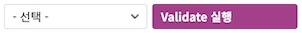
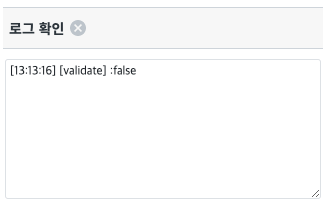
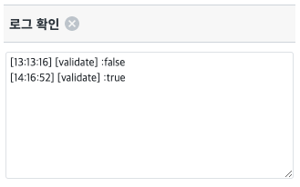
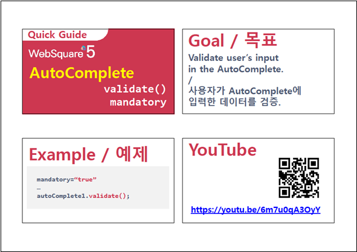

AutoComplete의 validate 함수를 이용해 값이 선택 되었는지 확인하는 예제입니다. validate()는 컴포넌트에서 값이 선택되면 "true", 선택되지 않으면 "false"를 반환합니다. 단, interactionMode="ture"인 경우 항상 "true"를 반환합니다.
AutoComplete의 validate() 함수 동작 확인하기
[브라우저(Chrome) 실행 예시]

[브라우저(Chrome) 실행 예시]

[브라우저(Chrome) 실행 예시]
[브라우저(Chrome) 실행 예시]

원하는 시점에 컴포넌트의 함수 'validate()'를 이용하여 스크립트를 작성합니다.
[소스 코드 예시] - 영역 [Event: onviewchange]
/** * 버튼 "Validate 실행"의 onclick 이벤트 */ scwin.btn_validate_onclick = function(e) { // validate 실행 및 결과 저장 var validate = acb_validate.validate(); //로그 출력 var strLog = "[validate] :" + validate; $c.frame.printExampleLog(strLog, txa_log, false); console.log(strLog); };
<xf:trigger ... ev:onclick="scwin.btn_validate_onclick"> <xf:label><![CDATA[Validate 실행]]></xf:label> </xf:trigger>
validate()
[웹스퀘어5 SP5 개발 가이드] 입력검증 - AutoComplete
링크 : https://docs1.inswave.com/sp5_user_guide/8df43d1f59fab704#30dca84a4ba450f2
AutoComplete - validate() & mandatory | AutoComplete | 웹스퀘어5 - 사용 팁
링크 : https://youtu.be/5DPn3dtn-vw
